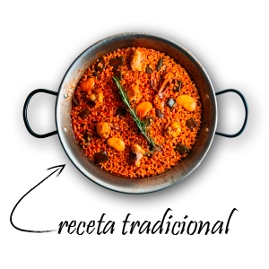
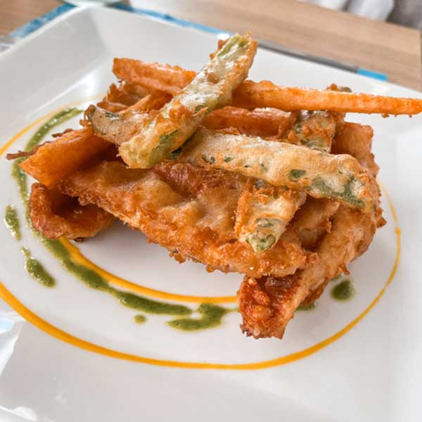
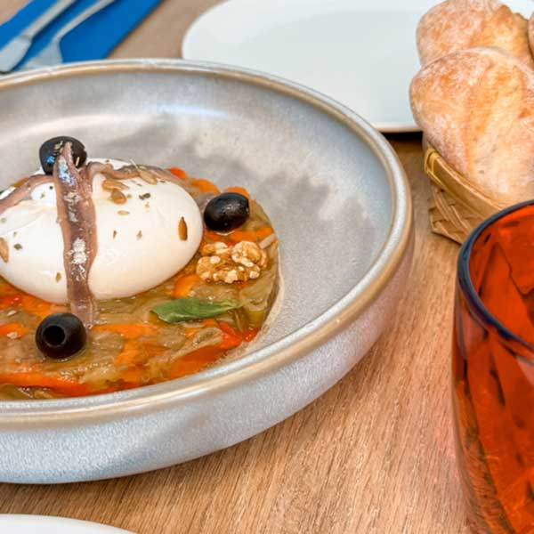
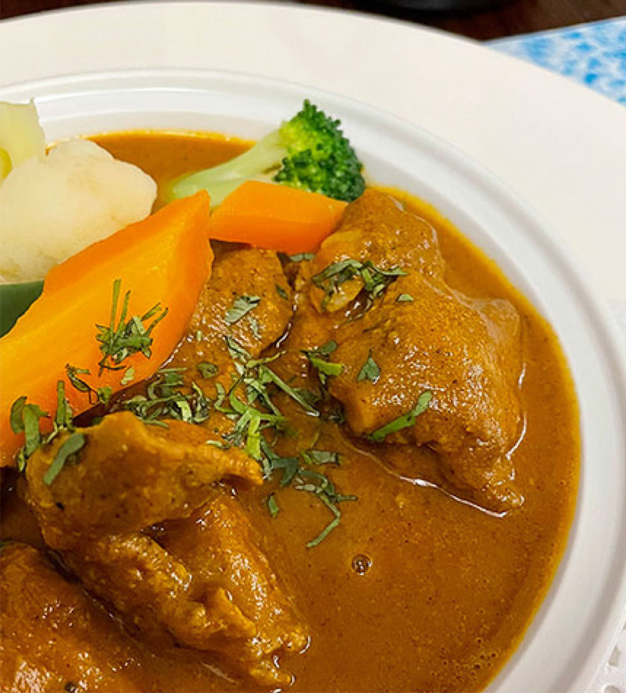
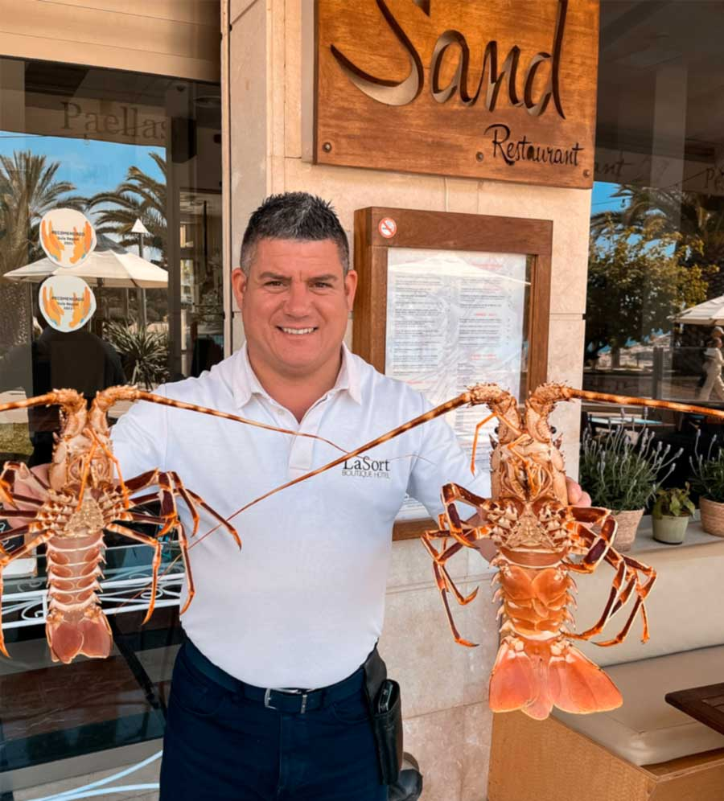
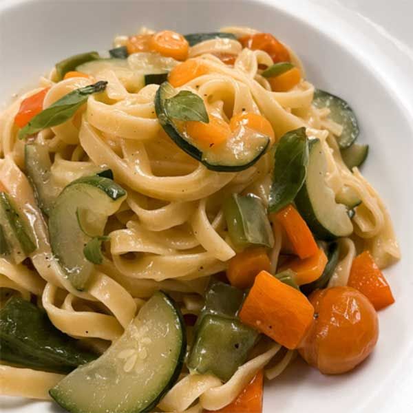
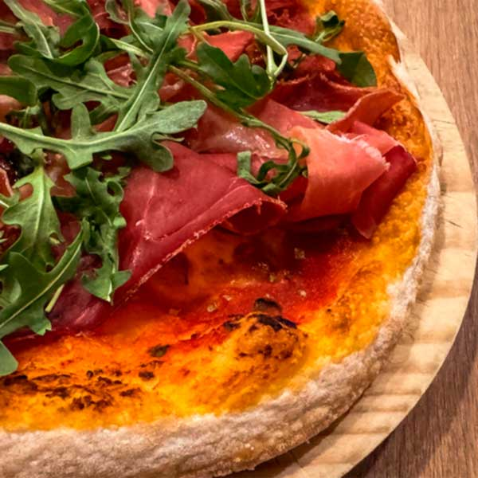

Valoración
4,4 ★★★★1.530 reseñas Google
En primera línea de la Playa de l’Ampolla, Sand es el refugio de quienes buscan arroces de autor, pescado de la lonja de Moraira y horas largas frente al mar. Cocina mediterránea con el ritmo de la costa.


Pescado limpio, fumet propio, punto justo del grano. Servido en sartén individual, como debe ser.
Un lugar fantástico junto al mar. El entorno es precioso, con unas vistas espectaculares y una tranquilidad que invita a quedarse.
Fumet propio, grano justo y pescado de la lonja de Moraira. Paellas individuales servidas en sartén, como las cocinan los que saben.

Servida en sartén propia, punto justo y socarrat. Marisco o mixta según temporada.
Sin espinas, sin pelar. Pescado limpio, fumet concentrado y grano abierto en su medida.

Entrada diaria de Moraira. Salmonetes, gallo, pescadilla — lo que traiga la barca esa mañana.

Pimiento y berenjena asados, anchoa y aceite virgen. La Marina Alta en una tabla.
Sand pertenece al Grupo LaSort, un grupo familiar con raíces en la Marina Alta que cuida sus casas una por una. En Sand se trabaja con producto de la lonja de Moraira y producto de huerta de temporada.
La Guía Michelin incluye al restaurante en su Selección 2025: cocina honesta, sin artificios, pensada para comer frente al mar sin perder el nivel.
Cocina mediterránea completa: arroces, pescados, carnes, pastas y pizzas al horno. Comida y sobremesa con los pies casi en la arena.




Abierto todos los días de 08:00 a 22:45. La terraza se llena pronto — recomendamos reservar por teléfono con algo de antelación.
Nuestro equipo atiende en horario del restaurante. Si no podemos contestar, deje un mensaje y le devolvemos la llamada.